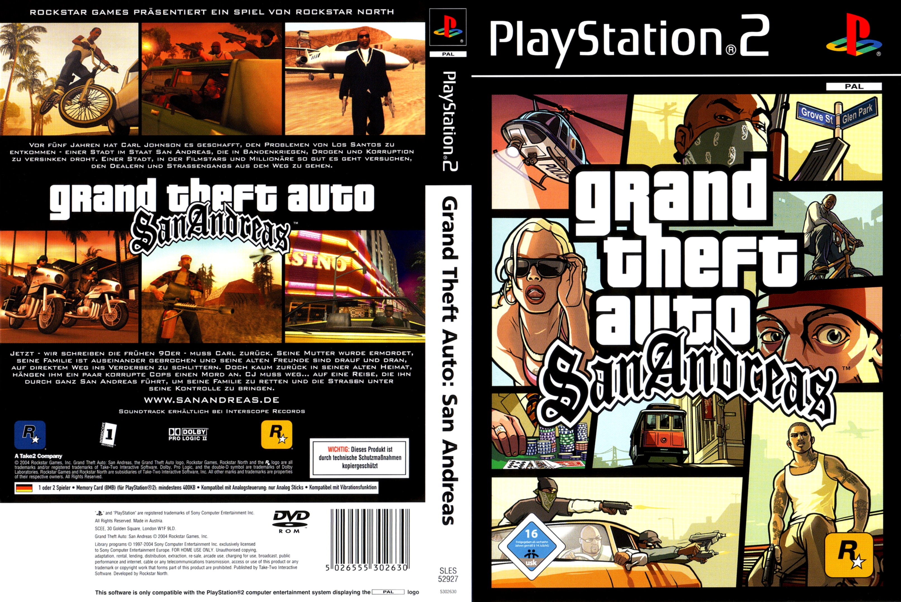
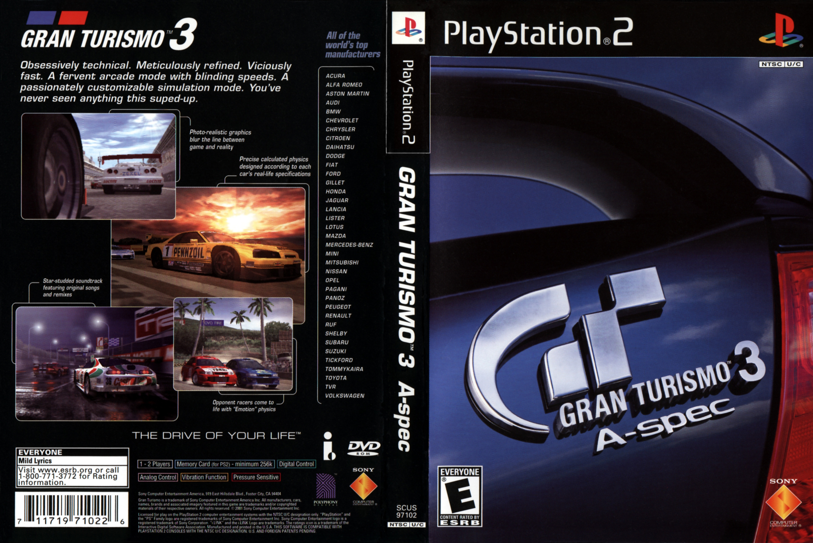
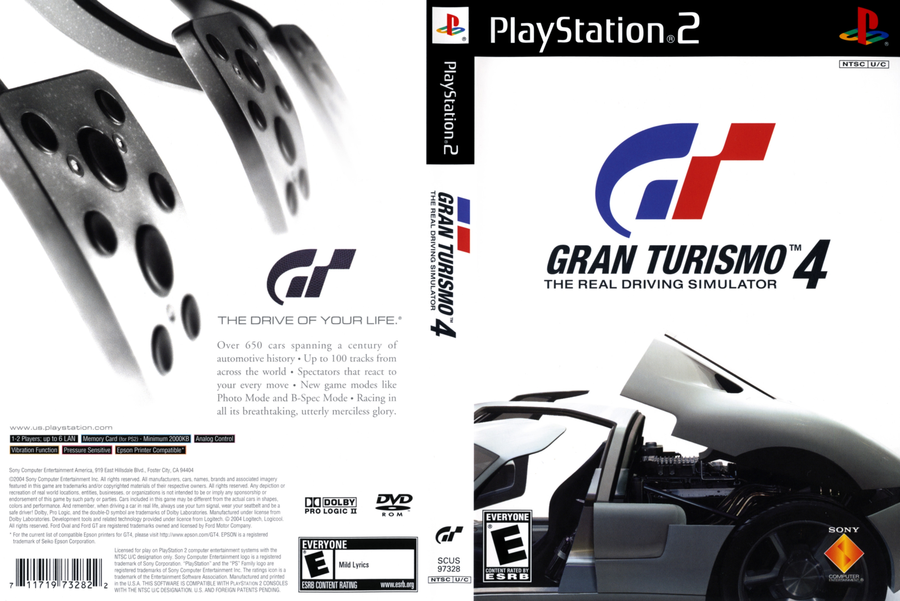
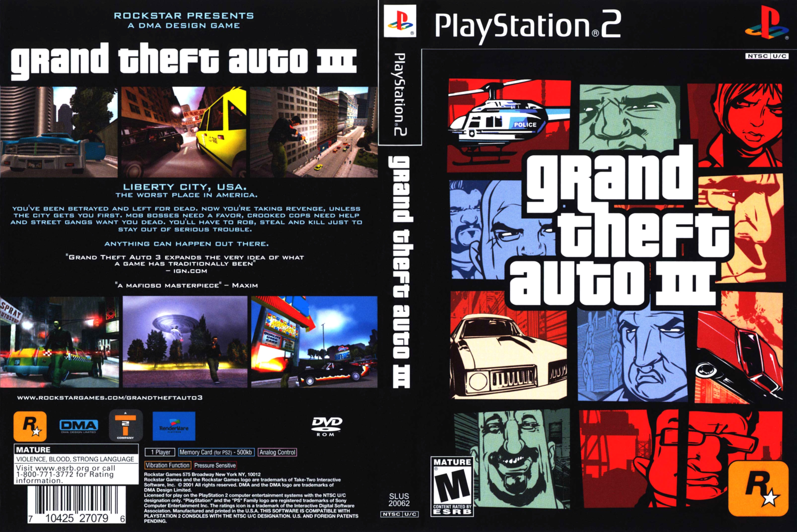

TOP 5 Game yang paling banyak dimainkan pada era PS2
PS2 atau PlayStation 2 adalah sebuah konsol yang sangat booming pada
masanya yang dimulai pada awal rilisnya pada tahun 2000 awal. Pada kesempatan ini
kita akan membahas 5 game terlaris pada konsol tersebut.
1. Grand Theft Auto: San Andreas

GTA:SA Cover
Grand Theft Auto: San Andreas atau GTA:SA adalah sebuah game buatan Rockstar Games yang dirilis pada tanggal 26 Oktober 2004.
Game ini menceritakan kisah Carl Johnson yang kembali ke rumahnya di San Andreas setelah meninggalkan kota selama 5 tahun.
Game ini merupakan game PS2 paling laris dengan total penjualan 17.33 juta kopi di seluruh dunia.
2. Gran Turismo 3: A-Spec

Grand Turismo 3 Cover
Gran Turismo 3: A-Spec adalah game racing simulator yang dikembangkan oleh Polyphony Digital dan dirilis pada tanggal 28 April 2001.
Game ini menjadi game PS2 terlaris kedua dengan total penjualan 14.89 juta kopi.
Gran Turismo 3 menawarkan pengalaman balap yang realistis dengan berbagai mobil dan track yang menantang.
3. Grand Theft Auto: Vice City
GTA Vice City Cover
Grand Theft Auto: Vice City dirilis pada tanggal 27 Oktober 2002 oleh Rockstar Games dan menjadi game ketiga terlaris di PS2 dengan penjualan 14.2 juta kopi.
Game ini berlatar kota Miami yang penuh warna dengan soundtrack ikonik dari era 1980-an.
Pemain memainkan karakter Tommy Vercetti dalam petualangan aksi yang epic.
4. Gran Turismo 4

Grand Turismo 4 Cover
Gran Turismo 4 adalah sekuel dari Gran Turismo 3 yang dikembangkan oleh Polyphony Digital dan dirilis pada tanggal 28 Desember 2004.
Game ini menjadi game keempat terlaris di PS2 dengan penjualan 11.76 juta kopi.
Gran Turismo 4 menawarkan peningkatan grafis, lebih banyak mobil, dan fitur-fitur gameplay yang lebih mendalam dibanding pendahulunya.
5. Grand Theft Auto III

GTA 3 Cover
Grand Theft Auto III adalah game yang merevolusi industri gaming dan dirilis pada tanggal 22 Oktober 2001 oleh Rockstar Games.
Game ini menjadi game kelima terlaris di PS2 dengan total penjualan 11.6 juta kopi.
GTA III memperkenalkan konsep open-world sandbox yang menjadi standar industri hingga saat ini, dengan gameplay aksi yang inovatif dan cerita yang menarik.